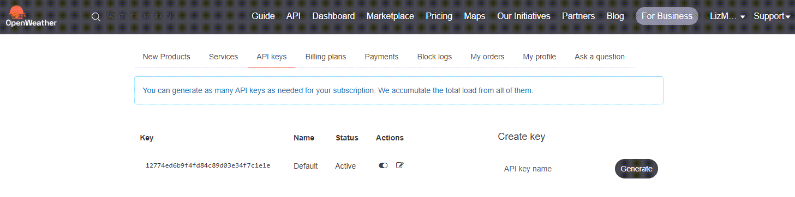
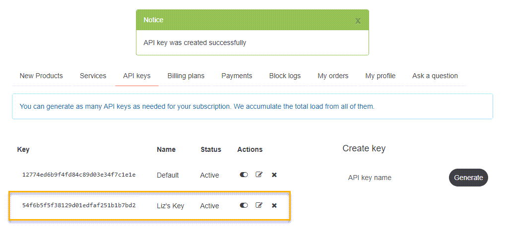

OpenWeatherMap API Guide¶
The OpenWeatherMap API Guide describes a RESTful API that provides access to comprehensive weather data for developers.
Table of Contents¶
- Overview
- Base URL
- Authentication
- Rate limits
- HTTP status and error codes
- Pagination
- Getting started
- Tutorial: Get current weather for a city
- API reference
Overview¶
The OpenWeatherMap API is a weather data service that provides access to comprehensive data sourced from global and local models, satellites, radars, and weather stations. Developers can use the API to retrieve current weather conditions, hourly and daily forecasts, historical data, and bulk weather information for multiple locations worldwide.
Common use cases¶
- Build real-time weather dashboards for websites or applications.
- Check weather forecasts for outdoor events and trigger contingency plans for extreme conditions.
- Monitor temperature, precipitation, and humidity for agriculture and crop management.
- Optimize delivery routes considering weather hazards for transportation.
- Adjust energy consumption based on temperature trends.
- Send emergency alerts for severe weather conditions, such as storms, hurricanes, and floods.
Technical details¶
- Organized around REST principles with resource-oriented URLs.
- Supports JSON by default, with optional XML and HTML formats.
- Uses query parameters, standard HTTP response codes, and API key–based authentication.
Target audience¶
This guide is intended for developers who want to integrate real-time, forecasted, or historical weather data into web, mobile, IoT, or backend applications using the OpenWeatherMap API. It assumes basic familiarity with HTTP requests, JSON, and API keys. Developers new to weather APIs can follow the step-by-step tutorial to get started quickly, while experienced developers can use the reference sections to implement specific products and query parameters.
Base URL¶
OpenWeather uses multiple service hosts.
Use the product‑specific host shown in each endpoint:
- Current & 5‑day/3‑hour Forecast:
https://api.openweathermap.org - Hourly Forecast (4 days, Pro plans):
https://pro.openweathermap.org - Geocoding (Direct/Reverse/ZIP):
https://api.openweathermap.org/geo/1.0 - Historical & Statistical:
https://history.openweathermap.org - Bulk (snapshots & 7‑day archives):
https://bulk.openweathermap.org
All requests must use HTTPS. For the correct path and parameters, see each endpoint section in API reference.
Authentication¶
The OpenWeatherMap API uses API keys to authenticate requests. All API requests must be made over HTTPS. Calls made over plain HTTP and API requests without authentication will fail.
Headers¶
OpenWeather authenticates via the appid query parameter (no auth header). Include appid in every request.
For example:
Where appid=123abc456def is your dedicated API key (passed as a query parameter).
Rate limits¶
A rate limit is the number of requests the API can receive in a specific time period. Rate limiting ensures efficient API performance and prevents abuse. Once the limit is reached, API requests from the client will fail.
Rate limits and billing vary by product and subscription. For example, One Call API 3.0 (by call) includes 1,000 calls/day free, and then $0.0015 per call beyond that daily quota. Before you ship, check each product’s pricing and limits.
Subscription Plans¶
Each tier offers specific rate limits and monthly quotas for API calls:
| Plan | Calls Per Minute | Monthly Call Limit |
|---|---|---|
| Startup | 600 calls/minute | 10 million calls |
| Developer | 3,000 calls/minute | 100 million calls |
| Professional | 30,000 calls/minute | 1 billion calls |
| Expert | 100,000 calls/minute | 3 billion calls |
| Enterprise | 200,000 calls/minute | 5 billion calls |
Note: These values are intentionally normalized for portfolio demonstration and do _not reflect current OpenWeatherMap pricing tiers.
Handling 429 errors (Too Many Requests)¶
If your application exceeds per‑minute or daily quotas, the API responds with an HTTP 429 error response. Implement exponential backoff and honor the Retry-After header (when available). Consider caching frequently requested data and batching requests. In addition, select a subscription tier aligned with your expected load. If repeated 429s occur, reduce call frequency or upgrade your plan.
Example: 429 error response¶
import time
import requests
API_KEY = "YOUR_API_KEY"
BASE_URL = "https://api.openweathermap.org/data/2.5/weather"
PARAMS = {"q": "London", "appid": API_KEY}
def call_owm_with_backoff(url, params, max_retries=5, base_delay=1.0):
"""Call OWM with exponential backoff on 429. Stops on non-retryable errors."""
attempt = 0
while True:
resp = requests.get(url, params=params, timeout=10)
if resp.status_code == 200:
return resp.json()
if resp.status_code == 429:
# Try to honor Retry-After if server provides it
retry_after = resp.headers.get("Retry-After")
if retry_after is not None:
delay = float(retry_after)
else:
# Exponential backoff with jitter
delay = base_delay * (2 ** attempt) + (0.25 * time.time() % 0.25)
attempt += 1
if attempt > max_retries:
raise RuntimeError(
f"Rate limit exceeded: too many 429 responses (attempts={attempt})."
)
print(f"Received 429. Backing off for {delay:.2f}s (attempt {attempt}/{max_retries})...")
time.sleep(delay)
continue
# For other HTTP errors, raise with details
resp.raise_for_status()
# Usage
try:
data = call_owm_with_backoff(BASE_URL, PARAMS)
print("Weather:", data.get("weather"))
except Exception as e:
print(f"Request failed: {e}")
¶
import time
import requests
API_KEY = "YOUR_API_KEY"
BASE_URL = "https://api.openweathermap.org/data/2.5/weather"
PARAMS = {"q": "London", "appid": API_KEY}
def call_owm_with_backoff(url, params, max_retries=5, base_delay=1.0):
"""Call OWM with exponential backoff on 429. Stops on non-retryable errors."""
attempt = 0
while True:
resp = requests.get(url, params=params, timeout=10)
if resp.status_code == 200:
return resp.json()
if resp.status_code == 429:
# Try to honor Retry-After if server provides it
retry_after = resp.headers.get("Retry-After")
if retry_after is not None:
delay = float(retry_after)
else:
# Exponential backoff with jitter
delay = base_delay * (2 ** attempt) + (0.25 * time.time() % 0.25)
attempt += 1
if attempt > max_retries:
raise RuntimeError(
f"Rate limit exceeded: too many 429 responses (attempts={attempt})."
)
print(f"Received 429. Backing off for {delay:.2f}s (attempt {attempt}/{max_retries})...")
time.sleep(delay)
continue
# For other HTTP errors, raise with details
resp.raise_for_status()
# Usage
try:
data = call_owm_with_backoff(BASE_URL, PARAMS)
print("Weather:", data.get("weather"))
except Exception as e:
print(f"Request failed: {e}")
HTTP status and error codes¶
Errors and statuses are returned with appropriate HTTP status codes and a structured JSON body.
Example: JSON error response (400)¶
Common HTTP status codes¶
| Code | Description | When It Occurs |
|---|---|---|
| 200 | OK | Successful requests |
| 400 | Bad Request | Validation errors, malformed JSON |
| 401 | Unauthorized | Missing/invalid API key |
| 403 | Forbidden | Insufficient permissions |
| 404 | Not Found | Resource does not exist |
| 429 | Too Many Requests | Rate limited |
| 500 | Server Error | Unexpected server-side error |
Pagination¶
Pagination allows you to retrieve large sets of data in smaller, manageable chunks by using specific parameters to limit the amount of data sent in each API response.
Unlike many APIs, OpenWeatherMap does not support traditional pagination mechanisms, such as limit, offset, or page parameters. Instead, it provides a simple way to control the number of results returned using the cnt parameter on certain endpoints.
How cnt works¶
The cnt parameter specifies the maximum number of data points to return in the response.
It is commonly used in the following forecast endpoints:
- 5‑day / 3‑hour Forecast (
/data/2.5/forecastonapi.openweathermap.org):cntlimits the number of 3‑hour timestamps returned. - Hourly Forecast (4 days, Pro) (
/data/2.5/forecast/hourlyonpro.openweathermap.org):cntlimits the number of hourly timestamps. - Daily Forecast (16 days) (
/data/2.5/forecast/daily):cntlimits the number of daily entries.
For example, the following API request returns 24 hourly forecast entries for London:
GET https://pro.openweathermap.org/data/2.5/forecast/hourly?lat=51.5085&lon=-0.1257&cnt=24&appid=YOUR_API_KEY
Note:
cntonly limits the number of results. It does not provide true pagination (such as page numbers or offsets). To retrieve additional data, you must send separate requests with different parameters.
Getting started¶
Create an account, which generates your API key. You can create additional API keys on your account page, and edit, delete, or deactivate your keys.
Topics:
Create an account¶
To get started using the OpenWeatherMap API, create an account. Once your account is created, the system generates your default API key.
Procedure:
-
Go to the OpenWeatherMap Create New Account page.
-
On the Create New Account page, enter your username, email address, and password.
-
Select Create Account.
-
On the next page, complete the Company and Purpose fields and select Save.
-
From your email account, select to verify your email address.
After your email address has been successfully confirmed, you will receive another email with your API key and a link to your account.
- Access your account page.

Note: Always make sure to use your API key in every API call.
Create more API keys¶
When you created your account, the OpenWeatherMap API generated a default API key for you. If needed, you can create additional API keys.
Procedure:
-
Access your account page.
-
In the Create key field, enter an API key name for the new API key you want to create.
-
Select Generate.
The system adds the new API key to your account. You can edit, delete, or deactivate any API key on this page.

Tutorial: Get current weather for a city¶
This tutorial describes how to retrieve the current weather for a specific city. It involves using your API key and testing it with curl (Client URL) to verify that the OpenWeatherMap API returns a valid response.
Note: Curl is a command-line tool used to transfer data to or from a server using various protocols - most commonly HTTP and HTTPS.
Before you begin¶
-
Complete all of the Getting Started tasks, including creating an account and getting an API key.
-
Verify that curl is installed on your computer:
-
For macOS/Linux, it is usually pre-installed.
- For Windows, download and install curl or use Git Bash.
Step 1: Copy your API key¶
From your account page, copy your API key. You will need this key for all API requests.
Step 2: Get geographic coordinates of a location¶
Many OpenWeather endpoints accept city names (q), zip or postal codes, or coordinates. Some products (such as One Call API 3.0) require coordinates. In practice, using the Geocoding API to resolve to lat/lon is the most reliable way to target the correct location, especially for ambiguous city names.
Since most people do not know the geographic coordinates of locations by memory, there is an API request that allows you to retrieve this data for any location. To limit the number of locations with the same name returned in the API response, use the limit parameter.
Run the following request to get coordinates for your city:
https://api.openweathermap.org/geo/1.0/direct?q={city name},{state code},{country code}&limit={limit}&appid={API key}
Query parameters
| Parameter | Description | Type | Required | Notes |
|---|---|---|---|---|
q |
City name, state code (only for the US), or country code. | string | required | You do not need to include all of this data. For example, you can only include the city name or only the country code. If you do include multiple attributes, they must be separated by a comma. |
limit |
Maximum number of locations with the same name returned in the API response. | number | optional | |
appid |
Your unique API key, which you can access on your account page. | string | required |
Sample request
For example, to retrieve the geographic coordinates for the city of London in England, run the following request:
The API response will be similar to the following:
[
{
"name": "London",
"local_names": {
"ms": "London",
"gu": "લંડન"
},
"lat": 51.5156177,
"lon": -0.0919983,
"country": "GB",
"state": "England"
}
]
lat:51.5156177 and lon:-0.0919983.
Note: This sample shows a subset of the full response. The actual response includes additional objects for the specified range.
Step 3: Retrieve current weather data for London, England¶
Now that you know the geographic coordinates you need, run another API request that specifies retrieving the current weather for London, England.
For example:
https://api.openweathermap.org/data/2.5/weather?lat=51.5156177&lon=-0.0919983&appid={API key}&units=metric
Where the query parameters are:
lat: Latitude coordinate of the location.lon: Longitude coordinate of the location.appid=<YOUR_API_KEY>: Your unique API key.
Step 4: Verify a successful response¶
A successful response returns a 200 HTTP status code and JSON objects containing the current weather for London (using the geographic coordinates).
Verify that the response is successful:
{
"coord": { "lon": -0.1257, "lat": 51.5085 },
"weather": [
{ "id": 500, "main": "Rain", "description": "light rain", "icon": "10d" }
],
"main": { "temp": 12.34, "humidity": 81 },
"name": "London"
}
"coord": { "lon": -0.1257, "lat": 51.5085 }: Coordinates for London, England."weather": [{ "description": "light rain" }]: Human‑readable weather description."main": { "temp": 12.34, "humidity": 81 }: Temperature in Celsius (becauseunits=metric) and relative humidity.
If you get a similar response, you're all set up with the OpenWeatherMap API.
Note: For more information about the JSON objects in the API response, see API Reference.
API reference¶
The OpenWeatherMap API is designed to help developers integrate weather-based data into applications by providing clear examples, endpoint details, and request/response formats.
API reference overview¶
The API reference provides curated examples of OpenWeatherMap API endpoints for portfolio purposes. Endpoints are grouped by resource type for easier navigation.
Each endpoint includes the following data:
- Description or purpose of the endpoint
- HTTP method (GET for all OpenWeatherMap API endpoints)
- Endpoint
- Request syntax
- Query parameters
- Request example
- Response example
- Response elements
Resource groups and endpoints¶
The following table summarizes the resource groups and their associated endpoints included in this guide:
| Resource Group | Description | Endpoint | Description |
|---|---|---|---|
| Current and forecast weather data 🌤 | Endpoints related to retrieving current and forecast weather data. You can retrieve hourly and daily forecast data. | Get current weather data | Retrieves current weather data for any location on the globe. |
| Get hourly forecast data | Retrieves hourly forecast data for any location on the globe. | ||
| Get daily forecast data | Retrieves daily forecast data for any location on the globe. | ||
| Historical weather data 🕰 | Endpoints related to retrieving historical weather data. You can retrieve hourly historical weather data for any location on the globe, and download this data in JSON or CSV formats. In addition, you can retrieve aggregated statistical data for the current year. Lastly, you can retrieve accumulated temperature and precipitation data for a specific time period in the past. | Get hourly historical weather data | Retrieves hourly historical data for any location on the globe. |
| Get aggregated annual statistical weather data | Retrieves aggregated statistical data for a specific location in the current year. | ||
| Get accumulated temperature data | Retrieves accumulated temperature data for a specific location within a specified date range. | ||
| Get accumulated precipitation data | Retrieves accumulated precipitation for a specific location within a specified date range. | ||
| Bulk download of weather data 📦 | Endpoints related to retrieving and downloading up-to-date current, forecasted, and 7-day historical weather data for numerous cities and zip code areas in Europe, England, and the United States in JSON or CSV file formats. | Get current weather data in bulk | Retrieves and downloads updated current weather data for numerous cities and zip codes in Europe, England, and the United States. |
| Get forecasted weather data in bulk | Retrieves and downloads up-to-date forecasted weather data for numerous cities and zip codes in Europe, England, and the United States. | ||
| Get 7-day archived weather data in bulk | Retrieves and downloads updated 7-day archived weather data (current and forecasted) for numerous cities and zip codes in Europe, England, and the United States. |
Headers¶
The OpenWeatherMap API does not require headers in the API requests.
Error responses¶
OpenWeather error payloads typically return a simple object with cod and message (strings or numbers).
For example:
{"cod": "401", "message": "Invalid API key. Please see https://openweathermap.org/faq#error401 for more info."}
HTTP methods in OpenWeatherMap¶
All OpenWeatherMap API endpoints are designed for data retrieval only, so they use HTTP GET requests by default. There are no POST, PUT, or DELETE methods because the API does not allow creating, updating, or deleting resources—only retrieving weather data.
When using curl, you don’t need to specify -X GET because it’s the default method.
For example:
If you want to be explicit, you can include -X GET but it's not mandatory:curl -X GET "https://api.openweathermap.org/data/2.5/weather?q=London&appid=<YOUR_API_KEY>&units=metric"
Current and forecast weather data 🌤¶
Endpoints related to retrieving current and forecast weather data. You can retrieve hourly and daily forecast data.
Endpoints¶
Get current weather data¶
Retrieves current weather data for any location on the globe. The data is collected and processed from different sources, such as global and local weather models, satellites, radars, and a vast network of weather stations. Data is available in JSON, XML, or HTML formats.
Method¶
GET (see HTTP methods in OpenWeatherMap).
Endpoint¶
https://api.openweathermap.org/data/2.5/weather
Request syntax¶
https://api.openweathermap.org/data/2.5/weather?lat={lat}&lon={lon}&appid={API key}&mode={mode}&units={units}&lang={lang}
Query parameters¶
| Parameter | Description | Type | Required | Notes |
|---|---|---|---|---|
lat |
Latitude coordinate of the location. | number | required | |
lon |
Longitude coordinate of the location. | number | required | |
appid |
Your unique API key, which you can access on your account page. | string | required | |
mode |
Format of the response. | string | optional | Valid values: xml or html. If you do not use the mode parameter, the response is in JSON format by default. |
units |
Units of measurement displayed in the response. | string | optional | Valid values: standard, metric, and imperial. If you do not use the units parameter, standard units are applied by default. |
lang |
Language in which the response is displayed. | string | optional | Default is en. |
Request example¶
Response example¶
{
"coord": {
"lon": 7.367,
"lat": 45.133
},
"weather": [
{
"id": 501,
"main": "Rain",
"description": "moderate rain"
}
],
"main": {
"temp": 284.2,
"feels_like": 282.93,
"temp_min": 283.06,
"temp_max": 286.82,
"pressure": 1021,
"humidity": 60,
"sea_level": 1021,
"grnd_level": 910
},
"visibility": 10000,
"wind": {
"speed": 4.09,
"deg": 121,
"gust": 3.47
},
"rain": {
"1h": 2.73
},
"clouds": {
"all": 83
}
}
Response elements¶
| Element | Description | Type | Notes |
|---|---|---|---|
coord |
Top-level coord key whose value is an object containing geographic coordinates. |
object | |
coord.lon |
Longitude of the location of the current weather data. | number | |
coord.lat |
Latitude of the location of the current weather data. | number | |
weather |
Top-level weather key whose value is an array of weather-condition objects. |
array | |
weather.id |
ID of the weather condition group. | integer | For a list of IDs of weather condition groups, on the Weather Conditions page, under Weather condition codes, view the first column in the tables. |
weather.main |
Group of weather conditions. | string | For a list of weather condition groups, on the Weather Conditions page, under Weather condition codes, view the second column in the tables. |
weather.description |
Description of the weather condition group. | string | For a list of weather condition groups, on the Weather Conditions page, under Weather condition codes, view the third column in the tables. |
main |
Top‑level key whose value is an object containing temperature and pressure/humidity data. | object | |
main.temp |
Current temperature of the location. | number | Unit default value: Kelvin, Metric: Celsius, Imperial: Fahrenheit |
main.feels_like |
Current temperature of the location. This temperature parameter accounts for the human perception of weather. | number | Unit default value: Kelvin, Metric: Celsius, Imperial: Fahrenheit |
main.temp_min |
Current minimum temperature of the location. | number | Unit default value: Kelvin, Metric: Celsius, Imperial: Fahrenheit. For more information, see Min/max temperature in Current Weather API. |
main.temp_max |
Current maximum temperature of the location. | number | Unit default value: Kelvin, Metric: Celsius, Imperial: Fahrenheit. For more information, see Min/max temperature in Current Weather API. |
main.pressure |
Current atmospheric pressure at sea level. | number | |
main.humidity |
Current percentage of humidity in the air. | number | |
main.sea_level |
Current atmospheric pressure at sea level. | number | |
main.grnd_level |
Current atmospheric pressure at ground level. | number | |
visibility |
Current visibility factor, measured in meters. | number | Maximum value: 10,000 (10 km) |
wind |
Top-level wind key whose value is an object containing data about the wind conditions. |
object | |
wind.speed |
Current wind speed. | number | m/s (default & metric), mph (imperial). |
wind.deg |
Current wind direction. | number | Value is in meteorological degrees. |
wind.gust |
Current wind gust. | number | m/s (default & metric), mph (imperial). |
rain |
Top-level rain key whose value is an object containing data about the rain. |
object | |
rain.1h |
Precipitation volume for the last 1 hour. | number | Unit: mm (millimeters). |
clouds |
Top-level clouds key whose value is an object containing data about the cloud conditions. |
object | |
clouds.all |
Current percentage of cloudiness. | number |
Get hourly forecast data¶
Retrieves hourly forecast data for any location on the globe. You can retrieve weather forecast data for up to 4 days in advance for every hour during the specified time period. Response data is available in JSON or XML formats.
Method¶
GET (see HTTP methods in OpenWeatherMap).
Endpoint¶
https://pro.openweathermap.org/data/2.5/forecast/hourly
Request syntax¶
https://pro.openweathermap.org/data/2.5/forecast/hourly?lat={lat}&lon={lon}&appid={API key}&mode={mode}&cnt={limit_timestamps}&lang={lang}
Query parameters¶
| Parameter | Description | Type | Required | Notes |
|---|---|---|---|---|
lat |
Latitude coordinate of the location. | number | required | |
lon |
Longitude coordinate of the location. | number | required | |
appid |
Your unique API key, which you can access on your account page. | string | required | |
mode |
Format of the response. | string | optional | Valid values: xml or json. Default is JSON if omitted. |
cnt |
Limits the number of timestamps (hourly forecasts) returned in the response. | integer | optional | For more information, see Limitation of results. |
lang |
Language in which the response is displayed. | string | optional | Default is en. |
Request example¶
Response example¶
{
"cnt": 96,
"list": [
{
"dt": 1661875200,
"main": {
"temp": 296.34,
"feels_like": 296.02,
"temp_min": 296.34,
"temp_max": 298.24,
"pressure": 1015,
"humidity": 50,
"sea_level": 1015,
"grnd_level": 933
},
"weather": [
{
"id": 500,
"main": "Rain",
"description": "light rain",
"icon": "10d"
}
],
"clouds": {
"all": 97
},
"wind": {
"speed": 1.06,
"deg": 66,
"gust": 2.16
},
"visibility": 10000,
"pop": 0.32,
"rain": {
"1h": 0.13
},
"sys": {
"pod": "d"
},
"dt_txt": "2022-08-30 16:00:00"
},
{
"dt": 1661878800,
"main": {
"temp": 296.31,
"feels_like": 296.07,
"temp_min": 296.2,
"temp_max": 296.31,
"pressure": 1015,
"humidity": 53,
"sea_level": 1015,
"grnd_level": 932
},
"weather": [
{
"id": 500,
"main": "Rain",
"description": "light rain",
"icon": "10d"
}
],
"clouds": {
"all": 95
},
"wind": {
"speed": 1.58,
"deg": 103,
"gust": 3.52
},
"visibility": 10000,
"pop": 0.4,
"rain": {
"1h": 0.24
},
"sys": {
"pod": "d"
},
"dt_txt": "2022-08-30 17:00:00"
},
{
"dt": 1661882400,
"main": {
"temp": 294.94,
"feels_like": 294.74,
"temp_min": 292.84,
"temp_max": 294.94,
"pressure": 1015,
"humidity": 60,
"sea_level": 1015,
"grnd_level": 931
},
"weather": [
{
"id": 500,
"main": "Rain",
"description": "light rain",
"icon": "10n"
}
],
"clouds": {
"all": 93
},
"wind": {
"speed": 1.97,
"deg": 157,
"gust": 3.39
},
"visibility": 10000,
"pop": 0.33,
"rain": {
"1h": 0.2
},
"sys": {
"pod": "n"
},
"dt_txt": "2022-08-30 18:00:00"
},
{
"dt": 1662217200,
"main": {
"temp": 294.14,
"feels_like": 293.99,
"temp_min": 294.14,
"temp_max": 294.14,
"pressure": 1014,
"humidity": 65,
"sea_level": 1014,
"grnd_level": 931
},
"weather": [
{
"id": 804,
"main": "Clouds",
"description": "overcast clouds",
"icon": "04d"
}
],
"clouds": {
"all": 100
},
"wind": {
"speed": 0.91,
"deg": 104,
"gust": 1.92
},
"visibility": 10000,
"pop": 0.53,
"sys": {
"pod": "d"
},
"dt_txt": "2022-09-03 15:00:00"
}
]
}
Response elements¶
| Element | Description | Type | Notes |
|---|---|---|---|
cnt |
Number of timestamps returned in the API response. | integer | |
list |
Top‑level list key whose value is an array of forecast entries. |
array | |
list.dt |
Time of forecasted data. | integer | Values are in Unix, UTC. |
list.main |
Top-level main key whose value is an object containing data about the temperature of the forecasted data. |
object | |
list.main.temp |
Forecasted temperature of the location at the specified hour. | number | Unit default value: Kelvin, Metric: Celsius, Imperial: Fahrenheit. |
list.main.feels_like |
Forecasted temperature of the location at the specified hour. This temperature parameter accounts for the human perception of weather. | number | Unit default value: Kelvin, Metric: Celsius, Imperial: Fahrenheit. |
list.main.temp_min |
Forecasted minimum temperature of the location at the specified hour. | number | Unit default value: Kelvin, Metric: Celsius, Imperial: Fahrenheit. For more information, see Min/max temperature in Current Weather API. |
list.main.temp_max |
Forecasted maximum temperature of the location at the specified hour. | number | Unit default value: Kelvin, Metric: Celsius, Imperial: Fahrenheit. For more information, see Min/max temperature in Current Weather API. |
list.main.pressure |
Forecasted atmospheric pressure at sea level of the location at the specified hour. | number | |
list.main.humidity |
Forecasted percentage of humidity in the air of the location at the specified hour. | number | |
list.main.sea_level |
Forecasted atmospheric pressure at sea level of the location at the specified hour. | number | |
list.main.grnd_level |
Forecasted atmospheric pressure at ground level of the location at the specified hour. | number | |
list.weather |
Top‑level weather key whose value is an array of weather‑condition objects. |
array | |
list.weather.id |
ID of the weather condition group. | integer | For a list of IDs of weather condition groups, on the Weather Conditions page, under Weather condition codes, view the first column in the tables. |
list.weather.main |
Group of weather conditions. | string | For a list of weather condition groups, on the Weather Conditions page, under Weather condition codes, view the second column in the tables. |
list.weather.description |
Description of the weather condition group. | string | For a list of weather condition groups, on the Weather Conditions page, under Weather condition codes, view the third column in the tables. |
list.weather.icon |
ID of the weather icon. | string | |
list.clouds |
Top-level clouds key whose value is an object containing data about the cloud conditions. |
object | |
list.clouds.all |
Current percentage of cloudiness of the location at the specified hour. | number | |
list.wind |
Top-level wind key whose value is an object containing data about the wind conditions. |
object | |
list.wind.speed |
Forecasted wind speed of the location at the specified hour. | number | Unit default: meters per second (m/s), Metric: meters per second (m/s), Imperial: miles per hour. |
list.wind.deg |
Forecasted wind direction of the location at the specified hour. | number | Value is in meteorological degrees. |
list.wind.gust |
Forecasted wind gust of the location at the specified hour. | number | Unit default: meters per second (m/s), Metric: meters per second (m/s), Imperial: miles per hour. |
list.rain |
Top-level rain key whose value is an object containing data about the rain. |
object | |
list.rain.1h |
Forecasted precipitation volume for the last 1 hour at that timestamp. | number | Unit: mm. |
list.snow |
Top-level snow key whose value is an object containing data about the snow conditions. |
object | |
list.snow.1h |
Forecasted snow volume for the last 1 hour at that timestamp. | number | Unit: mm. |
list.visibility |
Forecasted visibility factor of the location at the specified hour, measured in meters. | number | Maximum value: 10,000. |
list.pop |
Probability of precipitation of the location at the specified hour. | number | Valid values are between 0 and 1, where 0=0%, and 1=100%. For example, a value of 0.5 would be a 50% chance of precipitation at the specified hour. |
list.sys |
Top-level sys key whose value is an object containing data about the part of the day of the forecast. |
object | |
list.sys.pod |
Part of the day for the hourly forecast. | string | Valid values: n and d, where n=night and d=day. |
list.dt_txt |
Local date/time string for the forecast timestamp. | string | Local time (string). |
Get daily forecast data¶
Retrieves daily forecast data for any location on the globe. You can retrieve weather forecast data for up to 16 days in advance. Response data is available in JSON or XML formats.
Note: This endpoint is deprecated in the real API. It is included here for portfolio purposes _only. Prefer One Call API v3 (/data/3.0/onecall) for daily forecasts.
Method¶
GET (see HTTP methods in OpenWeatherMap).
Endpoint¶
https://api.openweathermap.org/data/2.5/forecast/daily
Request syntax¶
https://api.openweathermap.org/data/2.5/forecast/daily?lat=44.34&lon=10.99&appid={API key}&units=metric&lang=en&cnt=10
Query parameters¶
| Parameter | Description | Type | Required | Notes |
|---|---|---|---|---|
lat |
Latitude coordinate of the location. | number | required | |
lon |
Longitude coordinate of the location. | number | required | |
appid |
Your unique API key, which you can access on your account page. | string | required | |
mode |
Format of the response. | string | optional | Valid values: xml or json. If you do not use the mode parameter, the response is in JSON format by default. |
cnt |
Limits the number of days returned in the response. | integer | optional | For more information, see Limitation of results. |
units |
Unit of measurement applied to values returned in the response. | string | optional | Valid values: standard, metric, and imperial. If you do not use the units parameter, the standard unit of measurement is applied by default. |
lang |
Language in which the response is displayed. | string | optional | Default is en. |
Request example¶
https://api.openweathermap.org/data/2.5/forecast/daily?lat=44.34&lon=10.99&appid={API key}&units=metric&lang=en&cnt=10
Response example¶
{
"city": {
"coord": {
"lon": 10.99,
"lat": 44.34
},
"timezone": 7200
},
"cnt": 10,
"list": [
{
"dt": 1661857200,
"temp": {
"day": 299.66,
"min": 288.93,
"max": 299.66,
"night": 290.31,
"eve": 297.16,
"morn": 288.93
},
"feels_like": {
"day": 299.66,
"night": 290.3,
"eve": 297.1,
"morn": 288.73
},
"pressure": 1017,
"humidity": 44,
"weather": [
{
"id": 500,
"main": "Rain",
"description": "light rain",
"icon": "10d"
}
],
"speed": 2.7,
"deg": 209,
"gust": 3.58,
"clouds": 53,
"pop": 0.7,
"rain": 2.51
},
{
"dt": 1661943600,
"temp": {
"day": 295.76,
"min": 287.73,
"max": 295.76,
"night": 289.37,
"eve": 292.76,
"morn": 287.73
},
"feels_like": {
"day": 295.64,
"night": 289.45,
"eve": 292.97,
"morn": 287.59
},
"pressure": 1014,
"humidity": 60,
"weather": [
{
"id": 500,
"main": "Rain",
"description": "light rain",
"icon": "10d"
}
],
"speed": 2.29,
"deg": 215,
"gust": 3.27,
"clouds": 66,
"pop": 0.82,
"rain": 5.32
},
{
"dt": 1662030000,
"temp": {
"day": 293.38,
"min": 287.06,
"max": 293.38,
"night": 287.06,
"eve": 289.01,
"morn": 287.84
},
"feels_like": {
"day": 293.31,
"night": 287.01,
"eve": 289.05,
"morn": 287.85
},
"pressure": 1014,
"humidity": 71,
"weather": [
{
"id": 500,
"main": "Rain",
"description": "light rain",
"icon": "10d"
}
],
"speed": 2.67,
"deg": 60,
"gust": 2.66,
"clouds": 97,
"pop": 0.84,
"rain": 4.49
}
]
}
Response elements¶
| Element | Description | Type | Notes |
|---|---|---|---|
city |
Top-level city key whose value is an object containing data about the city. |
object | |
city.coord |
Top-level coord key whose value is an object containing geographic coordinates. |
object | |
city.coord.lat |
Latitude coordinate of the location. | number | |
city.coord.lon |
Longitude coordinate of the location. | number | |
timezone |
Time zone of the location. | integer | Time zone is displayed in relation to Unix, UTC (shift in seconds). |
cnt |
Number of days returned in the API response. | integer | |
list |
Top‑level list key whose value is an array of daily forecasts. |
array | |
list.dt |
Timestamp (date and time) of the forecasted data. | integer | |
list.temp |
Top-level temp key whose value is an object containing data about the temperature. |
object | |
list.temp.day |
Forecasted temperature at 12:00 local time on the specified day. | number | Unit default value: Kelvin, Metric: Celsius, Imperial: Fahrenheit. For more information, see Min/max temperature in Current Weather API. |
list.temp.min |
Forecasted minimum temperature of the location on the specified day. | number | Unit default value: Kelvin, Metric: Celsius, Imperial: Fahrenheit. For more information, see Min/max temperature in Current Weather API. |
list.temp.max |
Maximum temperature on the specified day (inside list.temp). |
number | Unit default value: Kelvin, Metric: Celsius, Imperial: Fahrenheit. For more information, see Min/max temperature in Current Weather API. |
list.temp.night |
Forecasted temperature at 00:00 local time on the specified day. | number | Unit default value: Kelvin, Metric: Celsius, Imperial: Fahrenheit. For more information, see Min/max temperature in Current Weather API. |
list.temp.eve |
Forecasted temperature at 18:00 local time on the specified day. | number | Unit default value: Kelvin, Metric: Celsius, Imperial: Fahrenheit. For more information, see Min/max temperature in Current Weather API. |
list.temp.morn |
Forecasted temperature at 06:00 local time on the specified day. | number | Unit default value: Kelvin, Metric: Celsius, Imperial: Fahrenheit. For more information, see Min/max temperature in Current Weather API. |
list.feels_like |
Top-level list.feels_like key whose value is an object that contains data about the human perception of weather. |
object | |
list.feels_like.day |
Forecasted temperature at 12:00 local time on the specified day. This temperature parameter accounts for the human perception of weather. | number | Unit default value: Kelvin, Metric: Celsius, Imperial: Fahrenheit. For more information, see Min/max temperature in Current Weather API. |
list.feels_like.night |
Forecasted temperature at 00:00 local time on the specified day. This temperature parameter accounts for the human perception of weather. | number | Unit default value: Kelvin, Metric: Celsius, Imperial: Fahrenheit. For more information, see Min/max temperature in Current Weather API. |
list.feels_like.eve |
Forecasted temperature at 18:00 local time on the specified day. This temperature parameter accounts for the human perception of weather. | number | Unit default value: Kelvin, Metric: Celsius, Imperial: Fahrenheit. For more information, see Min/max temperature in Current Weather API. |
list.feels_like.morn |
Forecasted temperature at 06:00 local time on the specified day. This temperature parameter accounts for the human perception of weather. | number | Unit default value: Kelvin, Metric: Celsius, Imperial: Fahrenheit. For more information, see Min/max temperature in Current Weather API. |
list.pressure |
Forecasted atmospheric pressure at sea level on the specified day. | number | |
list.humidity |
Forecasted percentage of humidity in the air on the specified day. | number | |
list.weather |
Top‑level weather key whose value is an array of weather‑condition objects. |
array | |
list.weather.id |
ID of the weather condition group. | integer | For a list of IDs of weather condition groups, on the Weather Conditions page, under Weather condition codes, view the first column in the tables. |
list.weather.main |
Group of weather conditions. | string | For a list of weather condition groups, on the Weather Conditions page, under Weather condition codes, view the second column in the tables. |
list.weather.description |
Description of the weather condition group. | string | For a list of weather condition groups, on the Weather Conditions page, under Weather condition codes, view the third column in the tables. |
list.weather.icon |
ID of the weather icon. | string | |
list.speed |
Forecasted maximum wind speed on the specified day. | number | Unit default: meters per second (m/s), Metric: meters per second (m/s), Imperial: miles per hour. |
list.deg |
Forecasted wind direction on the specified day. | number | Value is in meteorological degrees. |
list.gust |
Forecasted wind gust on the specified day. | number | Unit default: meters per second (m/s), Metric: meters per second (m/s), Imperial: miles per hour. |
list.clouds |
Forecasted percentage of cloudiness on the specified day. | number | |
list.rain |
Forecasted precipitation for the day. | number | Unit: mm. |
list.snow |
Forecasted snowfall for the day. | number | Unit: mm. |
list.pop |
Probability of precipitation on the specified day. | number | Valid values are between 0 and 1, where 0=0%, and 1=100%. For example, a value of 0.5 would be a 50% chance of precipitation for the specified day. |
Historical weather data 🕰¶
Endpoints related to retrieving historical weather data. You can retrieve hourly historical weather data for any location on the globe, and download this data in JSON or CSV formats. In addition, you can retrieve aggregated statistical data for the current year. Lastly, you can retrieve accumulated temperature and precipitation data for a specific time period in the past.
Endpoints¶
- Get hourly historical weather data
- Get aggregated annual statistical weather data
- Get accumulated temperature data
- Get accumulated precipitation data
Get hourly historical weather data¶
Retrieves hourly historical weather data for any location on the globe. You can also download this data in JSON or CSV formats - see the History Bulk and the History Forecast Bulk APIs.
Method¶
GET (see HTTP methods in OpenWeatherMap).
Endpoint¶
https://history.openweathermap.org/data/2.5/history/city
Request syntax¶
https://history.openweathermap.org/data/2.5/history/city?lat={lat}&lon={lon}&appid={API key}&type=hour&start={start_date}&end={end_date}&cnt={timestamps_limit}
Query parameters¶
| Parameter | Description | Type | Required | Notes |
|---|---|---|---|---|
lat |
Latitude coordinate of the location. | number | required | |
lon |
Longitude coordinate of the location. | number | required | |
type |
Type of historical data you want to retrieve. | string | required | The value for this parameter should be: hour. |
appid |
Your unique API key, which you can access on your account page. | string | required | |
start |
Start timestamp (Unix, UTC). | integer | optional | Example: 1369728000. |
end |
End timestamp (Unix, UTC). | integer | optional | Example: 1369789200. |
cnt |
Number of timestamps to return (one per hour). | integer | optional | Can be used instead of end. |
Request example¶
Response example¶
{
"cnt": 24,
"list": [
{
"dt": 1578384000,
"main": {
"temp": 275.45,
"feels_like": 271.7,
"pressure": 1014,
"humidity": 74,
"temp_min": 274.26,
"temp_max": 276.48
},
"wind": {
"speed": 2.16,
"deg": 87
},
"clouds": {
"all": 90
},
"weather": [
{
"id": 501,
"main": "Rain",
"description": "moderate rain",
"icon": "10n"
}
],
"rain": {
"1h": 0.9
}
]
}
Response elements¶
| Element | Description | Type | Notes |
|---|---|---|---|
cnt |
Number of timestamps returned in the API response. | integer | For example, if cnt= 24, 24 timestamps, or historical hourly data for 24 hours (1 day), are returned in the response. |
list |
Top‑level list key whose value is an array of hourly records. |
array | |
dt |
Time of historical data. | integer | Values are in Unix, UTC. |
main |
Top‑level main key whose value is an object containing temperature/pressure/humidity data. |
object | |
main.temp |
Temperature of the location for the specified timestamp. | number | Unit default value: Kelvin, Metric: Celsius, Imperial: Fahrenheit |
main.feels_like |
Temperature of the location for the specified timestamp. This temperature parameter accounts for the human perception of weather. | number | Unit default value: Kelvin, Metric: Celsius, Imperial: Fahrenheit |
main.pressure |
Atmospheric pressure at sea level for the specified timestamp. | number | |
main.humidity |
Percentage of humidity in the air for the specified timestamp. | number | |
main.temp_min |
Minimum temperature of the location for the specified timestamp. | number | Unit default value: Kelvin, Metric: Celsius, Imperial: Fahrenheit. For more information, see Min/max temperature in Current Weather API. |
main.temp_max |
Maximum temperature of the location for the specified timestamp. | number | Unit default value: Kelvin, Metric: Celsius, Imperial: Fahrenheit. For more information, see Min/max temperature in Current Weather API. |
main.sea_level |
Atmospheric pressure at sea level for the specified timestamp. | number | |
main.grnd_level |
Atmospheric pressure at ground level for the specified timestamp. | number | |
wind |
Top-level wind key whose value is an object containing data about the wind conditions. |
object | |
wind.speed |
Wind speed for the specified timestamp. | number | Unit default: meters per second (m/s), Metric: meters per second (m/s), Imperial: miles per hour. |
wind.deg |
Wind direction for the specified timestamp. | number | Value is in meteorological degrees. |
clouds |
Top-level clouds key whose value is an object containing data about the cloud conditions. |
object | |
clouds.all |
Percentage of cloudiness for the specified timestamp. | number | |
rain |
Top-level rain key whose value is an object containing data about the rain. |
object | |
rain.1h |
Precipitation volume for the last 1 hour. | number | Unit: mm. |
rain.3h |
Precipitation volume for the last 3 hours. | number | Unit: mm. |
snow |
Top‑level snow key whose value is an object with optional fields (such as 1h and 3h.) |
object | |
snow.1h |
Snow volume for the last 1 hour. | number | Unit: mm. |
snow.3h |
Snow volume for the last 3 hours. | number | Unit: mm. |
weather |
Top‑level weather key whose value is an array of weather‑condition objects. |
array | |
weather.id |
ID of the weather condition group. | integer | For a list of IDs of weather condition groups, on the Weather Conditions page, under Weather condition codes, view the first column in the tables. |
weather.main |
Group of weather conditions. | string | For a list of weather condition groups, on the Weather Conditions page, under Weather condition codes, view the second column in the tables. |
weather.description |
Description of the weather condition group. | string | For a list of weather condition groups, on the Weather Conditions page, under Weather condition codes, view the third column in the tables. |
weather.icon |
ID of the weather icon. | string |
Get aggregated annual statistical weather data¶
Retrieves aggregated statistical data for a specific location in the current year. This is useful when analyzing climate indicators and formulating a statistical approach to weather forecasting.
Using this endpoint, you can request basic statistical data for the following weather characteristics:
- Temperature
- Pressure
- Humidity
- Wind
- Precipitation
- Clouds
All statistical weather data can only be obtained in JSON format. The frequency of the data update is 1 hour.
Note: This endpoint does not return real historical data. It returns statistically calculated data based on real historical data for a specific period of time.
Method¶
GET (see HTTP methods in OpenWeatherMap).
Endpoint¶
https://history.openweathermap.org/data/2.5/aggregated/year
Request syntax¶
Query parameters¶
| Parameter | Description | Type | Required |
|---|---|---|---|
lat |
Latitude coordinate of the location. | number | required |
lon |
Longitude coordinate of the location. | number | required |
appid |
Your unique API key, which you can access on your account page. | string | required |
Request example¶
Response example¶
{
"result":[
{
"month": 1,
"day": 1,
"temp":{
"record_min":274.44,
"record_max":290.45,
"average_min":276.79,
"average_max":286.5,
"median":281.26,
"mean":281.29,
"p25":278.57,
"p75":283.83,
"st_dev":3.69,
"num":136
},
"pressure":{
"min":1014,
"max":1026,
"median":1021,
"mean":1020.5,
"p25":1019,
"p75":1023,
"st_dev":3.25,
"num":135
},
"humidity":{
"min":23,
"max":100,
"median":70,
"mean":65.88,
"p25":47,
"p75":82,
"st_dev":20.63,
"num":133
},
"wind":{
"min":0,
"max":10,
"median":1,
"mean":2.36,
"p25":1,
"p75":3,
"st_dev":2.3,
"num":136
},
"precipitation":{
"min":0,
"max":0.3,
"median":0,
"mean":0.01,
"p25":0,
"p75":0,
"st_dev":0.04,
"num":136
},
"clouds":{
"min":0,
"max":90,
"median":1,
"mean":20.18,
"p25":1,
"p75":40,
"st_dev":31.91,
"num":136
}
},
.....
]
}
Response elements¶
| Element | Description | Type | Notes |
|---|---|---|---|
result |
Top-level result key whose value is an object containing weather data results. |
object | |
result.month |
Number of the month for which you want to retrieve the statistical data. | integer | For example, to retrieve data for January, the value is 1. |
result.day |
Number of the day in the month for which you want to retrieve the statistical data. | integer | For example, to retrieve data for the 14th day of the month, the value is 14. |
result.temp |
Top-level temp key whose value is an object containing temperature data. |
object | |
result.temp.record_min |
Absolute minimum temperature on this date based on all historical measurements. | number | Value is in the Kelvin unit of measurement. |
result.temp.record_max |
Absolute maximum temperature on this date based on all historical measurements. | number | Value is in the Kelvin unit of measurement. |
result.temp.average_min |
Average of all minimum temperature values for this date. | number | Value is in the Kelvin unit of measurement. |
result.temp.average_max |
Average of all maximum temperature values for this date. | number | Value is in the Kelvin unit of measurement. |
result.temp.median |
Median value of the temperature for this date. | number | For more information, see Median values. |
result.temp.mean |
Average of all temperature measurements for this date. | number | Value is in the Kelvin unit of measurement. |
result.temp.p25 |
First quartile value of the temperature. | number | For more information, see Quartile values. |
result.temp.p75 |
Third quartile value of the temperature. | number | For more information, see Quartile values. |
result.temp.st_dev |
Standard deviation of the temperature. | number | For more information, see Standard deviation values. |
result.temp.num |
Number of measurements. | number | |
result.pressure |
Top-level pressure key whose value is an object containing data about pressure. |
object | |
result.pressure.min |
Absolute minimum pressure on this date based on all historical measurements. | number | Value is in the hPa (hectopascal) unit of measurement. |
result.pressure.max |
Absolute maximum pressure on this date based on all historical measurements. | number | Value is in the hPa (hectopascal) unit of measurement. |
result.pressure.median |
Median value of the pressure for this date. | number | Value is in the hPa (hectopascal) unit of measurement. For more information, see Median values. |
result.pressure.mean |
Average of all pressure measurements for this date. | number | Value is in the hPa (hectopascal) unit of measurement. |
result.pressure.p25 |
First quartile value of the pressure. | number | Value is in the hPa (hectopascal) unit of measurement. For more information, see Quartile values. |
result.pressure.p75 |
Third quartile value of the pressure. | number | Value is in the hPa (hectopascal) unit of measurement. For more information, see Quartile values. |
result.pressure.st_dev |
Standard deviation of the pressure. | number | Value is in the hPa (hectopascal) unit of measurement.For more information, see Standard deviation values. |
result.pressure.num |
Number of measurements. | number | |
result.humidity |
Top-level humidity key whose value is an object containing data about the humidity. |
object | |
result.humidity.min |
Absolute minimum percentage of humidity on this date based on all historical measurements. | number | |
result.humidity.max |
Absolute maximum percentage of humidity on this date based on all historical measurements. | number | |
result.humidity.median |
Median value percentage of humidity for this date. | number | For more information, see Median values. |
result.humidity.mean |
Average percentage of all humidity measurements for this date. | number | |
result.humidity.p25 |
First quartile value of the humidity percentage. | number | For more information, see Quartile values. |
result.humidity.p75 |
Third quartile value of the humidity percentage. | number | For more information, see Quartile values. |
result.humidity.st_dev |
Standard deviation of the humidity percentage. | number | For more information, see Standard deviation values. |
result.humidity.num |
Number of measurements. | number | |
result.wind |
Top-level wind key whose value is an object containing data about the wind conditions. |
object | |
result.wind.min |
Absolute minimum wind speed on this date based on all historical measurements. | number | Unit: meters per second (m/s). |
result.wind.max |
Absolute maximum wind speed on this date based on all historical measurements. | number | Unit: meters per second (m/s). |
result.wind.median |
Median value of the wind speed for this date. | number | Unit: meters per second (m/s). For more information, see Median values. |
result.wind.mean |
Average of all wind speed measurements for this date. | number | Unit: meters per second (m/s). |
result.wind.p25 |
First quartile value of the wind speed. | number | Unit: meters per second (m/s). For more information, see Quartile values. |
result.wind.p75 |
Third quartile value of the wind speed. | number | Unit: meters per second (m/s). For more information, see Quartile values. |
result.wind.st_dev |
Standard deviation of the wind speed. | number | Unit: meters per second (m/s). For more information, see Standard deviation values. |
result.wind.num |
Number of measurements. | ||
result.precipitation |
Top-level precipitation key whose value is an object containing data about precipitation. |
object | |
result.precipitation.min |
Absolute minimum precipitation on this date based on all historical measurements. | number | Unit: mm. |
result.precipitation.max |
Absolute maximum precipitation on this date based on all historical measurements. | number | Unit: mm. |
result.precipitation.median |
Median precipitation for this date. | number | Unit: mm. |
result.precipitation.mean |
Average precipitation for this date. | number | Unit: mm. |
result.precipitation.p25 |
First quartile of precipitation. | number | Unit: mm. |
result.precipitation.p75 |
Third quartile of precipitation. | number | Unit: mm. |
result.precipitation.st_dev |
Standard deviation of precipitation. | number | Unit: mm. |
result.precipitation.num |
Number of measurements. | number |
Get accumulated temperature data¶
Retrieves accumulated temperature data for a specific location within a specified date range. Accumulated temperature is the sum, measured in degrees, by which the actual air temperature rises above or falls below a threshold level during the specified date range.
Method¶
GET (see HTTP methods in OpenWeatherMap).
Endpoint¶
https://history.openweathermap.org/data/2.5/history/accumulated_temperature
Request syntax¶
https://history.openweathermap.org/data/2.5/history/accumulated_temperature?lat={lat}&lon={lon}&start={start_date}&end={end_date}&threshold={threshold_temp}&appid={API key}
Query parameters¶
| Parameter | Description | Type | Required | Notes |
|---|---|---|---|---|
lat |
Latitude coordinate of the location. | number | required | |
lon |
Longitude coordinate of the location. | number | required | |
appid |
Your unique API key, which you can access on your account page. | string | required | |
start |
Start date from which you want to retrieve data. | string | required | Date is in Unix, UTC. For example: 1586445367. |
end |
End date until which you want to retrieve data. | string | required | Date is in Unix, UTC. For example: 1589445367. |
threshold |
Minimum temperature by which to retrieve accumulated temperature data. | number | optional | All values smaller than the set value for threshold are not included in the accumulated temperature data. |
Request example¶
https://history.openweathermap.org/data/2.5/history/accumulated_temperature?lat=51.51&lon=-0.13&start=1586853378&end=1589445367&threshold=284&appid={API key}
Response example¶
Note: This sample shows a subset of the full response. The actual response includes additional objects for the specified range.
Response elements¶
| Element | Description | Type | Notes |
|---|---|---|---|
date |
Date of the accumulated temperature data. | string | |
temp |
Accumulated temperature indicator for the date. | number | Unit: Kelvin. |
count |
Number of data measurements used in the accumulation of this data. | integer |
Get accumulated precipitation data¶
Retrieves accumulated precipitation for a specific location within a specified date range. Accumulated precipitation is the sum, measured in millimeters, of daily precipitation during the specified date range.
Method¶
GET (see HTTP methods in OpenWeatherMap).
Endpoint¶
https://history.openweathermap.org/data/2.5/history/accumulated_precipitation
Request syntax¶
https://history.openweathermap.org/data/2.5/history/accumulated_precipitation?lat={lat}&lon={lon}&start={start}&end={end}&appid={API key}
Query parameters¶
| Parameter | Description | Type | Required | Notes |
|---|---|---|---|---|
lat |
Latitude coordinate of the location. | number | required | |
lon |
Longitude coordinate of the location. | number | required | |
appid |
Your unique API key, which you can access on your account page. | string | required | |
start |
Start date from which you want to retrieve data. | string | required | Date is in Unix, UTC. For example: 1586445367. |
end |
End date until which you want to retrieve data. | string | required | Date is in Unix, UTC. For example: 1589445367. |
Request example¶
https://history.openweathermap.org/data/2.5/history/accumulated_precipitation?lat=51.51&lon=-0.12&start=1586853378&end=1589445367&appid={API key}
Response example¶
Note: This sample shows a subset of the full response. The actual response includes additional objects for the specified range.
Response elements¶
| Element | Description | Type | Notes |
|---|---|---|---|
date |
Date of the accumulated precipitation data. | string | |
rain |
Accumulated precipitation for the date. | number | Unit: mm. |
count |
Number of data measurements used in the accumulation of this data. | integer |
The
thresholdparameter is not used. The whole amount of precipitation data is provided for a specific period.
Bulk download of weather data 📦¶
Endpoints related to retrieving and downloading up-to-date current, forecasted, and 7-day historical weather data for numerous cities and zip code areas in Europe, England, and the United States in JSON or CSV file formats.
Endpoints¶
- Get current weather data in bulk
- Get forecasted weather data in bulk
- Get 7-day archived weather data in bulk
Get current weather data in bulk¶
Retrieves and downloads updated current weather data for numerous cities and zip codes in Europe, England, and the United States in JSON or CSV file formats.
Method¶
GET (see HTTP methods in OpenWeatherMap).
Endpoint¶
https://bulk.openweathermap.org/snapshot/{BULK_FILE_NAME}
Request syntax¶
Query parameters¶
| Parameter | Description | Type | Required | Notes |
|---|---|---|---|---|
{BULK_FILE-NAME} |
Filename of the file that contains current weather data for the bulk list of locations you want. | number | required | For the list of files, see Current weather bulks. |
appid |
Your unique API key, which you can access on your account page. | string | required |
Request example¶
Download the bulk file¶
- As described in Request syntax, construct the API request:
where {BULK_FILE_NAME} is one of the following five files that contains current weather data:
| Seq. | Filename | Number of Locations | Updated by UTC Time | Notes |
|---|---|---|---|---|
| 1 | weather_14.json.gz | 22,635 cities | 1 time/hour (00:10, 01:10, 02:10,...) | For a list of all cities included in the file, see Consolidated City List. |
| 2 | weather_16.json.gz | 209,579 cities | 1 time/hour (00:20, 01:20, 02:20,...) | For a list of all cities included in the file, See Extended City List. |
| 3 | weather_zip.eu.json.gz | 153,952 EU zip codes | 1 time/hour (00:20, 01:20, 02:20,...) | |
| 4 | weather_zip.us.json.gz | 41,959 US zip codes | 1 time/hour (00:20, 01:20, 02:20,...) | |
| 5 | weather_zip.uk.json.gz | 15,225 UK postcodes | 1 time/hour (00:20, 01:20, 02:20,...) |
- Unpack the downloaded file by using any suitable archiver software. You will then have a JSON or CSV formatted file that is ready to use.
Note: All bulk files are available in both JSON and CSV formats. Filenames in the above table are relevant for JSON format. To download files in CSV format, change json to csv in the filename. For example, the JSON filename is weather_16.json.gz, and the CSV filename for the same data is weather_16.csv.gz.
- To download updated weather data, repeat steps #1-2 at the times indicated in the column, Updated by UTC Time, by the table in step #1. Weather data is updated in these files on a regular basis.
Get forecasted weather data in bulk¶
Retrieves and downloads up-to-date forecasted weather data for numerous cities and zip codes in Europe, England, and the United States in JSON or CSV file formats.
Method¶
GET (see HTTP methods in OpenWeatherMap).
Endpoint¶
https://bulk.openweathermap.org/snapshot/{BULK_FILE_NAME}
Request syntax¶
Query parameters¶
| Parameter | Description | Type | Required | Notes |
|---|---|---|---|---|
{BULK_FILE-NAME} |
Filename of the file that contains forecasted weather data for the bulk list of locations you want. | number | required | For the list of files, see Forecast bulks. |
appid |
Your unique API key, which you can access on your account page. | string | required |
Request example¶
Download the bulk file¶
- As described in Request syntax, construct the API request:
where {BULK_FILE_NAME} is one of the following five files that contains forecasted weather data:
| Seq. | Filename | Number of Locations | Updated by UTC Time | Notes |
|---|---|---|---|---|
| 1 | hourly1h_14.json.gz | 22,635 cities | 4 times/day (03:00, 09:00, 15:00, 21:00) | For a list of all cities included in the file, see Consolidated City List. |
| 2 | hourly1h_16.json.gz | 209,579 cities | 4 times/day (03:00, 09:00, 15:00, 21:00) | For a list of all cities included in the file, See Extended City List. |
| 3 | hourly1h_zip.eu.json.gz | 153,952 EU zip codes | 2 times/day (08:00, 20:00) | |
| 4 | hourly1h_zip.us.json.gz | 41,959 US zip codes | 2 times/day (08:00, 20:00) | |
| 5 | hourly1h_zip.uk.json.gz | 15,225 UK postcodes | 2 times/day (08:00, 20:00) |
- Unpack the downloaded file by using any suitable archiver software. You will then have a JSON or CSV formatted file that is ready to use.
Note: All bulk files are available in both JSON and CSV formats. Filenames in the above table are relevant for JSON format. To download files in CSV format, change json to csv in the filename. For example, the JSON filename is hourly1h_14.json.gz, and the CSV filename for the same data is hourly1h_14.csv.gz.
- To download updated weather data, repeat steps #1-2 at the times indicated in the column, Updated by UTC Time, in the table in step #1. Weather data is updated in these files on a regular basis.
Get 7-day archived weather data in bulk¶
Retrieves and downloads updated 7-day archived weather data (current and forecasted) for numerous cities and zip codes in Europe, England, and the United States in JSON or CSV file formats.
Method¶
GET (see HTTP methods in OpenWeatherMap).
Endpoint¶
https://bulk.openweathermap.org/archive/{BULK_FILE_NAME}
Request syntax¶
Query parameters¶
| Parameter | Description | Type | Required | Notes |
|---|---|---|---|---|
{BULK_FILE-NAME} |
Filename of the file that contains archived weather data for the bulk list of locations you want. | number | required | For the list of files, see 7-day archive of current and forecast weather bulks files. |
appid |
Your unique API key, which you can access on your account page. | string | required |
Request example¶
Download the bulk file¶
- As described in Request syntax, construct the API request:
where {BULK_FILE_NAME} is one of the files that contains a 7-day archive of current and forecast weather data.
- Unpack the downloaded file by using any suitable archiver software. You will then have a JSON or CSV formatted file that is ready to use.
Note: All bulk files are available in both JSON and CSV formats. Filenames in the above table are relevant for JSON format. To download files in CSV format, change json to csv in the filename. For example, the JSON filename is hourly1h_zip_eu_011025_2015.json.gz, and the CSV filename for the same data is hourly1h_zip_eu_011025_2015.csv.gz.
- To download updated weather data, repeat steps #1-2 at the times indicated in the column, Available data per day, UTC time, in the table on the page, 7-day archive of current and forecast weather bulks files. Weather data is updated in these files on a regular basis.